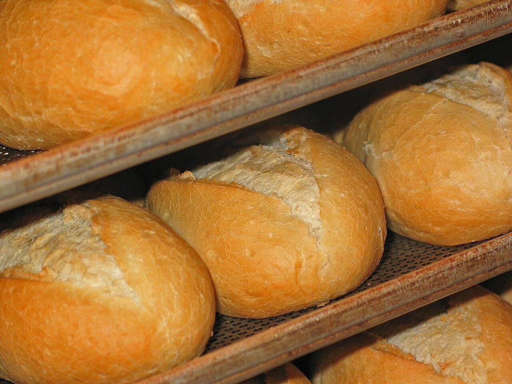

店のこと ×2
店のこと
お店について確認できているのは、所在地とInstagramのアカウントだけです。
このページの「想像してみる」部分は、制作側が想像して書いたものです。お店の実際の様子・考え・商品とは関係がありません。
確認できていること
- 店名は「BAKE32」、業種はベーカリー
- 所在地は島根県松江市宍道町昭和32(〒699-0408)
- 屋号の「32」は、所在地の番地と同じ数字(由来は分かりません)
- 電話番号はなし。連絡はInstagramから
- 営業時間・定休日・メニュー・価格・ご予約・駐車場は準備中

想像してみる
「BAKE」という言葉から
制作側は、粉を量り、生地をのばし、折り、焼く、という手順を思い浮かべました。実際のお店の作り方やパンの種類は分かりません。下の写真は、そのイメージを伝えるための国外・撮影地不明のフリー素材です。


